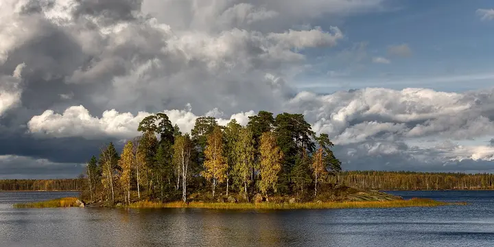

Фото: Pavlikhin, CC BY-SA 4.0 · Wikimedia Commons
Скальный пейзажный парк · Пригороды
Парк Монрепо
Пейзажный парк на гранитных скалах над Выборгским заливом: мостики, остров-некрополь и вода между соснами. «Ласточка» с Финляндского — 1 час 15 минут; весной парк закрывают на просушку.
- ₽ · до 1 500 ₽ на человека
- Новое в каталоге
Позвать сюда: Парк МонрепоОткрыть в каталоге: Парк МонрепоМаршрут до места: Парк Монрепо
Адрес и детали
- Адрес
- Выборг, парк Монрепо
Открыть на Яндекс Картах (в новой вкладке) - Станция
- ж/д Выборг
- Район
- Пригороды
- Цена
- до 1 500 ₽ на человека
- Проверено
- работает — проверили в ноябре 2026
Входит в подборки
Как позвать
- Выбери план, место или событие — в карточке адрес, цены и маршрут в Яндекс Картах.
- Нажми «Позвать сюда» — соберётся приглашение-игра для свидания или голосование для компании.
- Отправь ссылку в любой мессенджер: тебе ответят, а компания отметит, куда и когда может. Бесплатно и без регистрации.